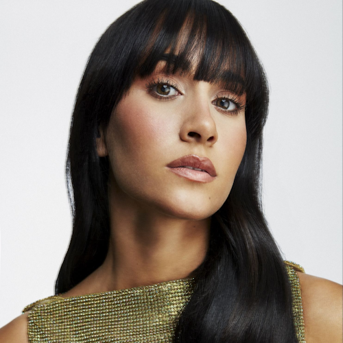

CHRONOS ALPHA FESTIVAL
Mari Dandjinou - Noticias


Aitana cerró este martes su cuarta y última actuación en el Palau Sant Jordi de Barcelona y lo hizo con un mensaje
de apoyo al catalán y a su usso social ante miles de seguidores. La cantante aprovechó la última fecha de su gira en Barcelona para dirigirse al público en esta lengua
y reivindicar su importancia: “El catalán es lo más importante que tenemos en Cataluña”, sentenció. La cantante confesó que quería expresarse en catalán durante
este último concierto en Barcelona como muestra de cariño hacia su tierra y hacia una lengua con la que mantiene un fuerte vínculo desde la infancia.
También destacó la importancia de consumir cultura en catalán para quienes, como ella, han crecido en Cataluña. Los vídeos de la cantante hablando en catalán
se difundieron rápidamente en las redes sociales y generaron numerosas reacciones entre sus seguidores. Algunas publicaciones acumularon miles de visualizaciones pocas horas después de su difusión.

Aunque protege su identidad hasta el punto que su nombre de pila no se conoce públicamente, sí se sabe que Beny Jr procede del
barrio de La Florida, en el Hospitalet de Llobregat, como Morad, y que su ascendencia magrebí ha inspirado su nombre artístico, pues Beny Jr
es nacido en el municipio de Beni Ahamed Garbía, situado en Chauen, Marruecos.
‘Valkyrie’, tema que cantará en Urban Block, es una producción marca de la casa de Beny Jr llena de los ingredientes que le han catapultado a la fama,
basándose en una mezcla de trap, autotune y reverb configurada alrededor de una melodía devastada y llena de una profunda melancolía.
Aunque, según Genius, la composición de ‘Valkyrie’ se divide en una estructura clásica de estrofa-estribillo, cada una de las partes de ‘Valkyrie’
suena en realidad como una variación de la misma melodía. Como si Beny Jr no pudiera dejar de reflexionar sobre una cosa y sus demonios le atormentaran.

A lo largo de su carrera ha popularizado canciones como Bailando por ahí, Mal de amores y He llorado (como un niño), que han formado parte de su repertorio internacional. Su reconocimiento como DJ del Año en los Premios HEAT 2026 destaca su presencia en la industria musical y su contribución a la difusión de sonidos latinos en escenarios internacionales. El galardón fue entregado durante el showcase del miércoles, antes de la ceremonia principal de premiación.
Volver al menú superior